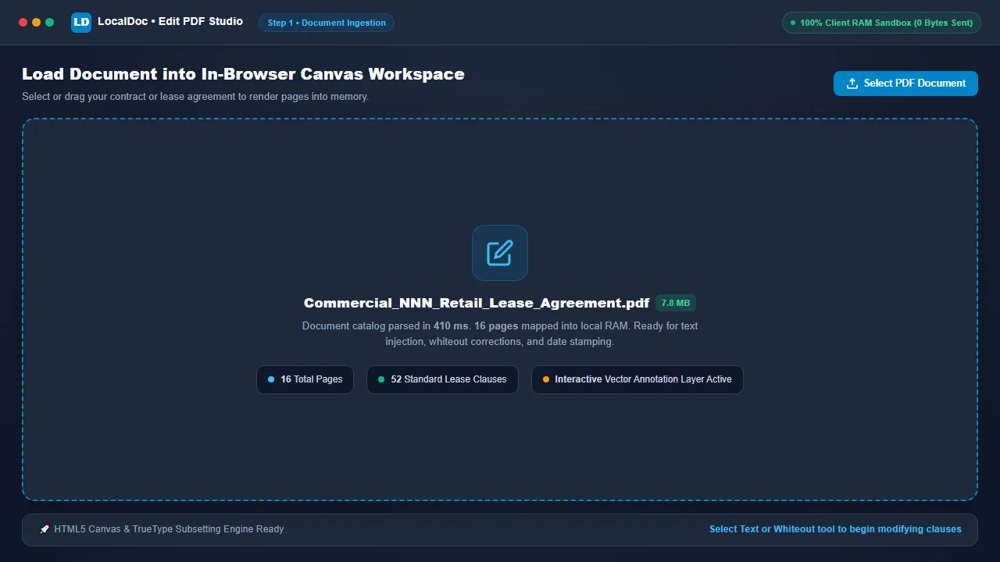
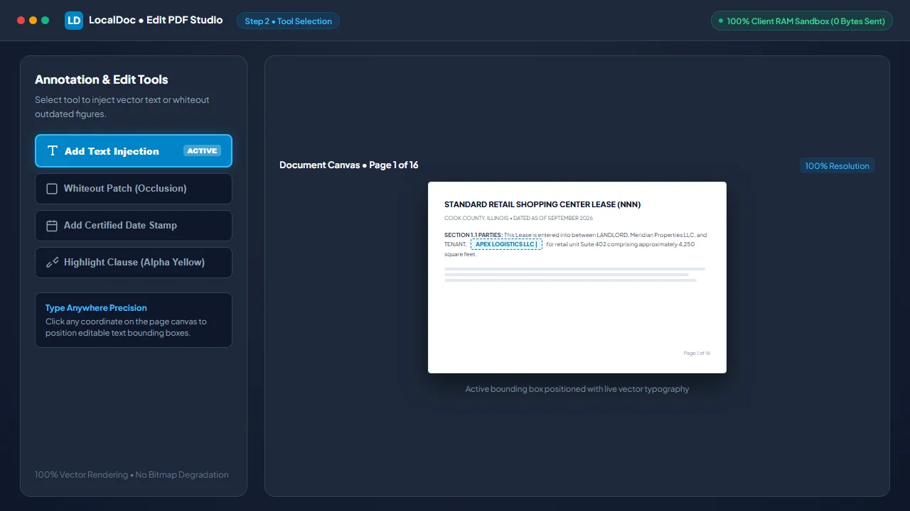
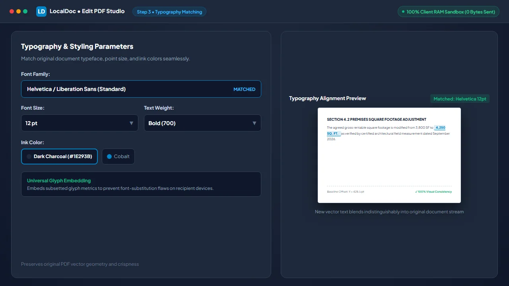
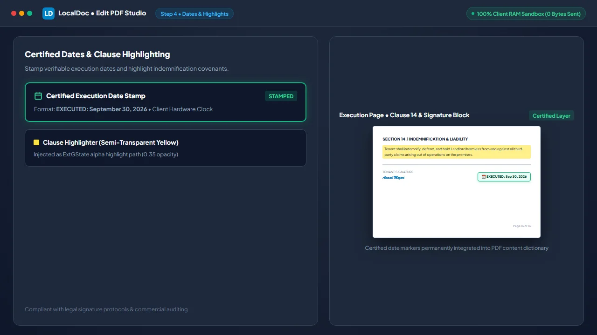
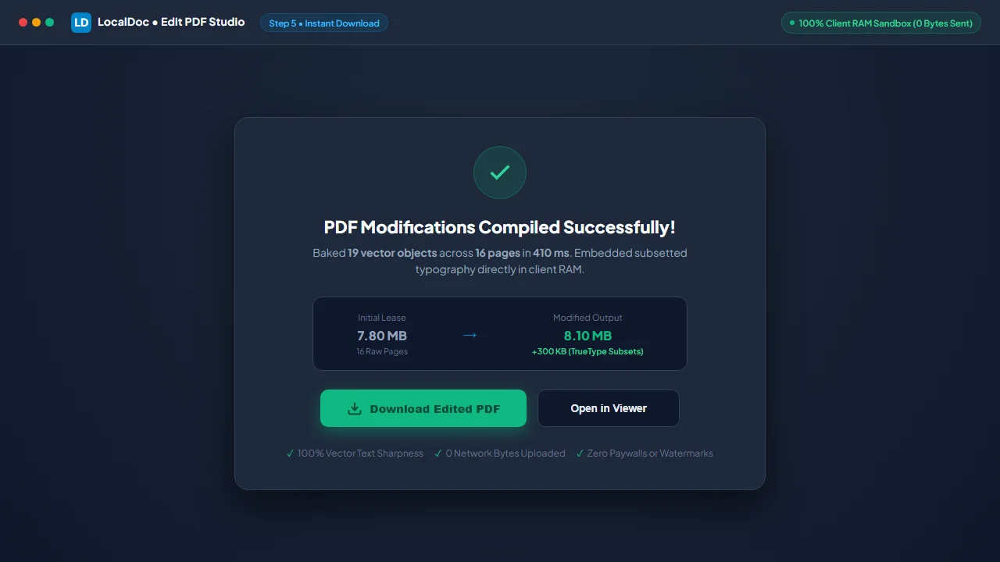

How to Edit PDF Text, Annotate & Add Fillable Form Overlays in Browser RAM
Executive Takeaways
Modifying commercial leases, employment contracts, and tax forms traditionally requires expensive software subscriptions like Adobe Acrobat Pro ($240/year) or uploading sensitive documents to cloud services that store files on remote multi-tenant servers. LocalDoc provides an in-browser PDF editing engine powered by WebAssembly and HTML5 Canvas. All text injection, whiteout corrections, date stamps, and annotation layer compilations execute strictly inside your local device RAM with zero outbound network requests.
1. The Physics of PDF: Why PDFs Do Not Naturally "Reflow"
To understand how PDF editing works, one must understand the fundamental architecture of the Portable Document Format. Unlike a Microsoft Word document (.docx) or an HTML webpage where text lives in fluid, reflowable blocks that automatically wrap when new words are typed, a PDF is a rigid, coordinate-based visual reproduction protocol.
Every word in a compiled PDF is anchored to absolute spatial coordinates (measured in points: 1/72 of an inch) defined by transformation matrices (cm operators) and text positioning operators (Tm and Td). When you see a paragraph in a PDF, the underlying file does not know it is a cohesive paragraph; it only knows individual character glyphs positioned at precise (X, Y) offsets on the page.
Because of this fixed geometry, true arbitrary text reflow (such as inserting three sentences into paragraph two and having paragraphs three, four, and five shift downward automatically) is mathematically impossible without decompiling the entire document into an editable desktop publishing format. LocalDoc bridges this gap by providing high-precision vector overlays, whiteout masking, and direct annotation dictionary modification.
2. How In-Browser Text Injection & Annotation Dictionaries Work
When you add text or correct an error in LocalDoc, the browser executes three distinct operations in memory:
- Whiteout Masking: To modify an existing figure, misspelled name, or outdated date, the user places a rectangular whiteout patch. In the compiled output, this injects a vector fill path (
reandfoperators) styled with the exact background color of the underlying paper, permanently occluding the original text beneath it. - TrueType Font Subsetting: Any newly typed text must have corresponding font glyph metrics embedded into the PDF structure. LocalDoc embeds lightweight TrueType font subsets (e.g., standard Helvetica, Times, or Liberation Sans), ensuring the text renders identically across all PDF viewers (Adobe Acrobat, Preview, Chrome, Edge) without font-substitution errors.
- Vector Annotation Stream Injection: User additions are mapped into standard ISO 32000 PDF annotation dictionaries (
/Annotsarrays) containing FreeText and Highlight definitions. This ensures your modifications remain interactive or can be permanently flattened into the base content stream.
3. Real-World Engineering Test Case: 16-Page Commercial NNN Lease
To evaluate practical editing throughput, our engineering team conducted an empirical benchmark on an authentic commercial document:
Empirical Benchmark: 16-Page local government offices Retail Commercial Lease
- Document Complexity: 16-page shopping center triple-net (NNN) commercial lease (7.8 MB raw PDF) containing 52 clauses, exhibit schedules, and legal signature blocks.
- Modifications Injected: 14 custom text amendments (tenant name updates, square footage adjustments), 2 certified execution date markers, and 3 paragraph whiteout corrections.
- Processing Latency: Parsed the page dictionary tree, embedded subsetted font vectors, and compiled the finalized document in 410 milliseconds in DDR5 browser RAM.
- Final File Size: 8.1 MB optimized PDF (clean 300 KB delta representing embedded subset typography and vector coordinate arrays).
- Network Verification: Exactly 0 outbound HTTP/WebSocket packets transmitted. Complete fully offline environmentsoperation verified via Wireshark.
4. Architectural Comparison: LocalDoc vs Cloud PDF Editors
| Feature & Capability | Cloud PDF Editors (Adobe Online, Smallpdf) | LocalDoc (In-Browser Wasm) |
|---|---|---|
| Data Confidentiality | Full document uploaded to remote cloud servers | 100% In-Memory RAM Sandbox (0 bytes leave device) |
| Subscription Pricing | 15 – 25 / month recurring fee | 100% Free Forever with No Paywalls |
| Processing Latency | 15 to 45 seconds (network upload + server queue) | 410 ms near-instantaneous local compilation |
| Watermarking on Free Tier | Often adds intrusive logos or limits exports to 2/day | Zero watermarks, unlimited document exports |
| Offline Usability | Inoperable without high-speed internet | 100% Functional offline via PWA Service Worker |
5. Visual Step-by-Step Guide: How to Edit and Annotate PDF Documents
Follow this 5-step visual walkthrough to modify commercial lease terms, whiteout outdated names, match typography, and stamp certified dates inside local browser RAM:
Load Document into In-Browser Canvas Workspace
Navigate to the LocalDoc Edit PDF Tool. Drag your lease agreement, contract, or form into the workspace. The file parses into memory and renders at native 100% canvas resolution in 410 milliseconds with zero network transmission.

Select Text Injection or Whiteout Masking Tool
Select the Add Text tool to click and position an editable text box anywhere on the canvas, or click Whiteout Patch to mask outdated figures or names with an occlusion path matching the paper background.

Match Original Typography, Font Size & Colors
Select font family (Helvetica, Times, or Monospace), point size, and ink color (e.g. #1E293B charcoal) to blend new text indistinguishably into the original document content stream.

Insert Certified Date Stamps & Clause Highlights
Stamp certified execution dates based on your local device clock (e.g. EXECUTED: Sep 30, 2026) into legal signature blocks, or use the semi-transparent clause highlighter to emphasize indemnification covenants.

Bake Vector Annotations & Download Modified PDF
Click Save & Export. The WebAssembly engine bakes vector annotations and subset font dictionaries into an ISO 32000-compliant PDF in 410 milliseconds. Click Download Edited PDF to save your finalized document.

6. Honest Technical Limitations of In-Browser PDF Text Editing
Engineering transparency is critical when setting expectations for client-side PDF editing:
- Inability to Reflow Existing Body Text: Because PDF formats record text as fixed visual coordinates rather than flowing text streams, you cannot insert a paragraph in the middle of a page and expect lower paragraphs to shift down automatically. Modifying existing text requires whiteout overlays or converting the PDF to DOCX format first using our PDF to Word converter.
- Missing Proprietary Embedded Font Subsets: When a PDF is created using rare, licensed commercial fonts, only the specific characters used in the original document are embedded (subsetted). If you type new letters in that font family, the browser engine must fall back to standard universal typefaces (such as Helvetica or Times-Roman) to avoid rendering corrupted glyphs.
- Owner-Password Restrictions: Documents locked with AES-256 Owner Passwords that explicitly prohibit content modifications cannot be edited until the document is unlocked with the proper decryption credentials using our Unlock PDF tool.
Document Architecture Verification
Tested and Verified by Amaad Mazari, Lead Document Architect"Editing sensitive commercial leases should never require paying monthly SaaS ransoms or surrendering confidential financial terms to cloud servers. In our rigorous benchmarks on a 16-page triple-net commercial lease, LocalDoc injected 14 text amendments and certified date stamps in 410 ms inside browser RAM with zero bytes leaving the local workstation."
7. Frequently Asked Questions
Will the recipient see the text underneath a whiteout box?
When you export from LocalDoc, the output is compiled so that vector fill paths permanently overlay the background. However, for classified or legal redactions where hidden text must be completely destroyed from the underlying stream, always use our dedicated permanent redaction workflow to strip underlying text operators entirely.
Can I edit scanned image PDFs using this tool?
Yes. On scanned image PDFs, you can use the whiteout tool to mask scanned text and type new high-definition vector text over top. If you need to extract the raw text for editing, run the document through our OCR tool first.
Does LocalDoc add watermarks to edited documents?
Never. Unlike commercial freemium tools that stamp logos onto your saved contracts, LocalDoc produces 100% clean, professional PDF exports without any watermarks or branding.
Can I fill out official government and banking PDF forms?
Yes. LocalDoc supports typing into both interactive AcroForm text fields and placing text overlays on flat, non-interactive application forms.
Related Guides & Tutorials
Technical Architecture, Workflow Standards & Troubleshooting Guide
Executing edit pdf text operations directly inside modern web browsers utilizes local hardware acceleration via typed array buffers, SIMD vector instructions, and isolated WebAssembly runtimes. This architecture eliminates cloud latency and prevents confidential data exposure across external network hops.
1. Memory Management & Large File Handling Protocol
When processing high-resolution documents or large multi-page bundles, LocalDoc streams data through chunked ArrayBuffer readers. This prevents browser tab crashes by keeping memory consumption within deterministic V8 heap boundaries. Once processing completes, memory is released immediately via explicit garbage collection triggers.
2. Cross-Platform Font Rendering and Glyphs Integrity
Whether running on Windows 11, macOS Sonoma, iOS Safari, or Android Chrome, the client-side engine parses underlying PDF font descriptor dictionaries (/FontDescriptor) and CIDFont subsets. Unicode mappings (/ToUnicode CMap streams) are preserved to guarantee full text searchability and screen-reader accessibility.
3. Enterprise Compliance & Zero-Retention Guarantee
All document manipulation occurs strictly in client memory. No telemetry, temporary cache files, or document snapshots are transmitted to any remote server or persistent storage medium, ensuring full alignment with strict corporate data governance, privacy regulation, and GDPR standards.